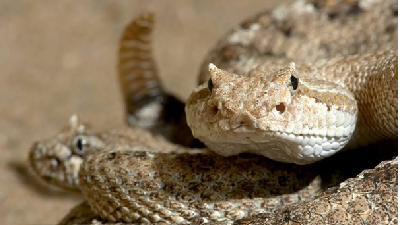
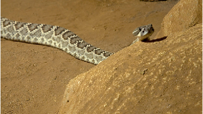

Rattlesnake
Some curiosities about this hero
- The rattle protects other animals from being bitten while at the same time protects the snake from being stepped on!
- Rattlesnakes may be more active at night in the summer in areas where daytime temperatures exceed 90 degrees Fahrenheit
(32 degrees Celsius), resting in the shade during the day to digest their food.
- Rattlesnakes only look for food when they’re hungry.
- An adult rattler goes about two weeks between meals, on average, depending on how large its last meal was. Younger rattlesnakes
eat more often, about once a week.
- It can strike at a speed of about five-tenths of a second!
- The protein crotamine, present in the venom of the Brazilian rattlesnake, has an analgesic action 30 times more potent
than morphine but without the addicting side effects.
- These beautiful animals are important to the environment, because they control rodent populations.